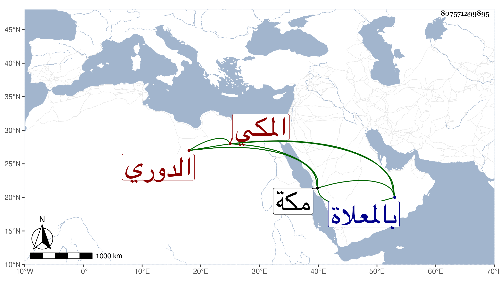

0902Sakhawi.DawLamic.ITO20230111-ara1.EIS1600.807571299895
Biography ID: 807571299895
أحمد بن عبد الله الدوري المكي فراش بحرمها . سمع العز بن جماعة وما علمته حدث وباشر الفراشة سنين كثيرة جدا وأمانة الزيت والشمع قليلا ولم يحمد في انتمائه ... وكان على ذهنه قليل من الحكايات المضحكة يحكيها عند قبة الفراشين ويجتمع عنده الأطفال لسماعها ويترددون إليه لذلك وكان مع ذلك يصلي بالناس التراويح بالقرب منها فيصلي معه الجم الغفير لمزيد تخفيفه ويلقبون صلاته المسلوقة وقد أثكل عدة أولاد في حياته ولذا رغب قبل موته بقليل عن الفراشة لابن أخته ووقف جانبا من داره بالمسفلة من مكة على أولاد أخته ومات بمكة سحر يوم الجمعة رابع عشر شوال سنة تسع عشرة وقد جاز الستين ظنا غالبا ودفن بالمعلاة . قاله الفاسي في مكة .
